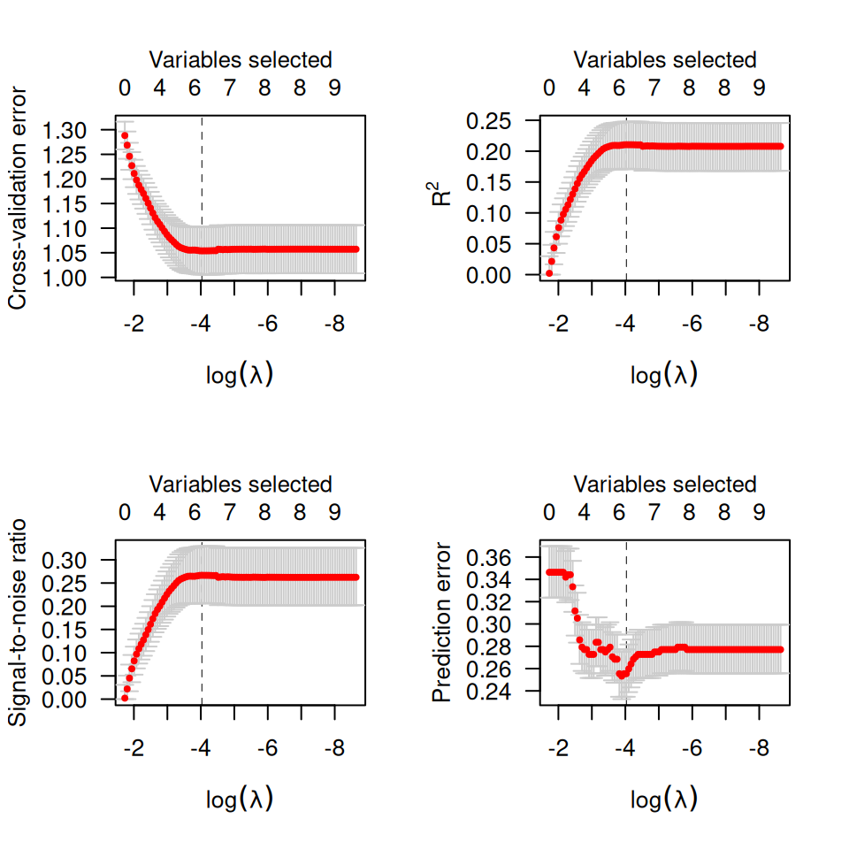
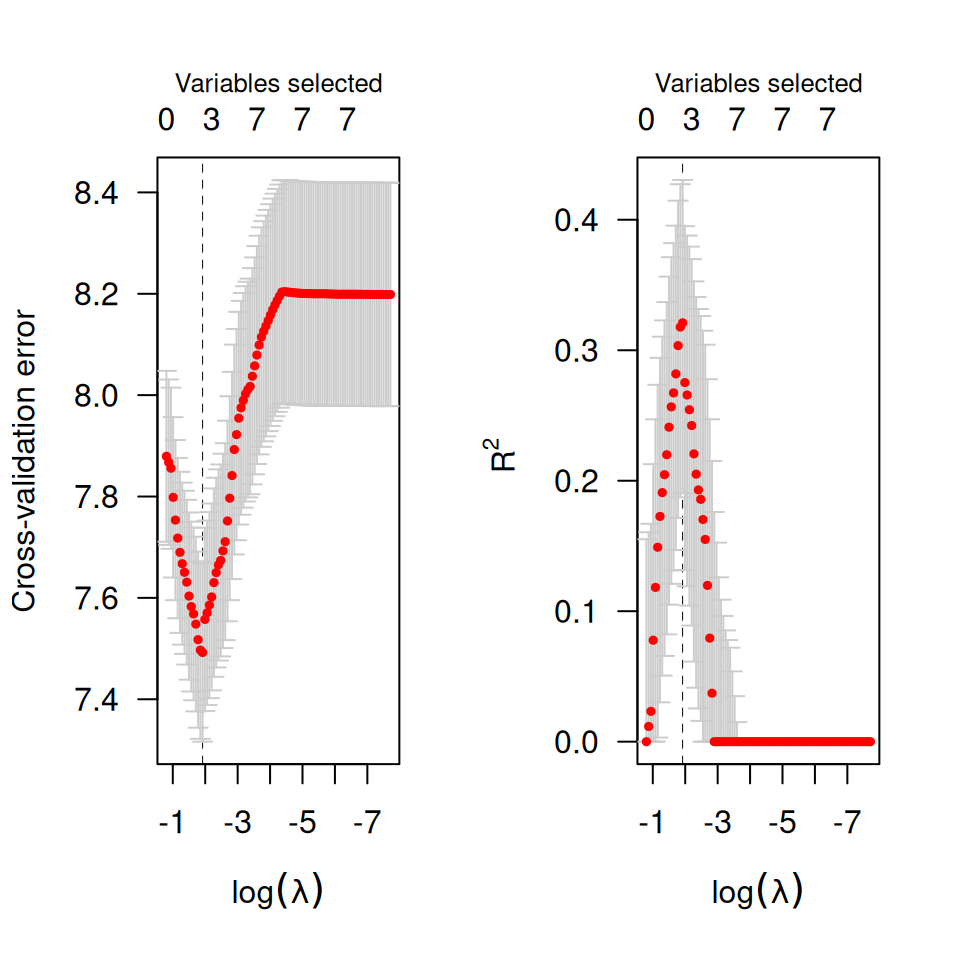
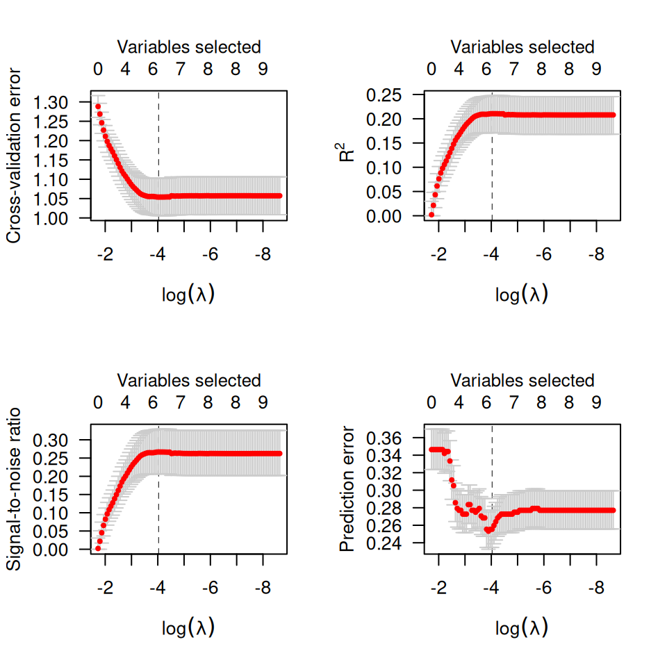
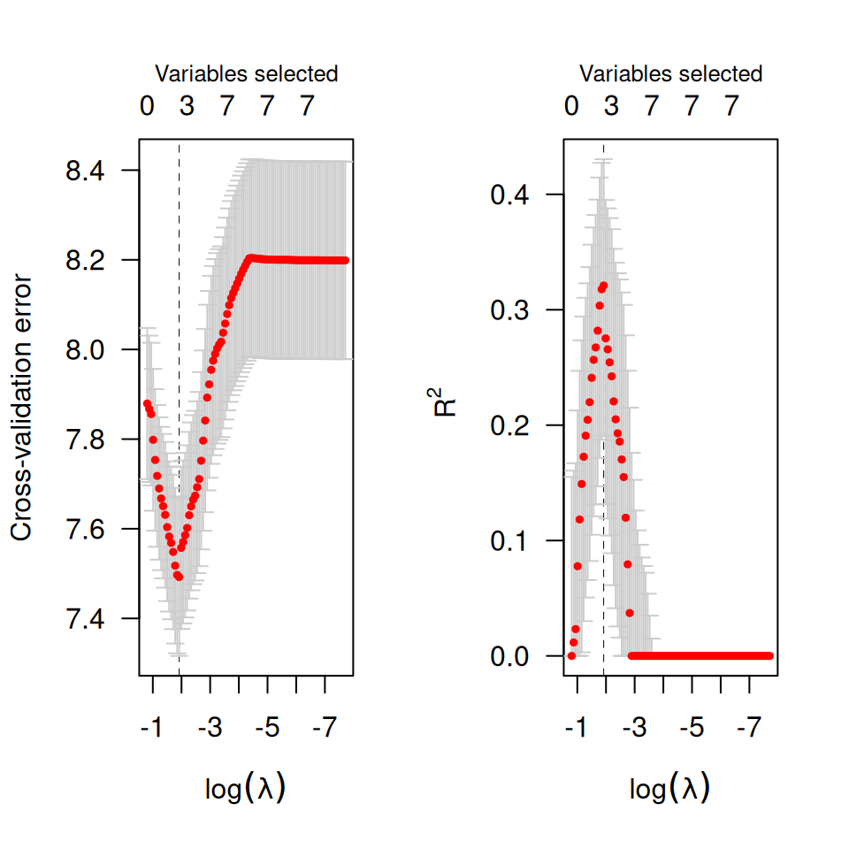

Plots the cross-validation curve from a cv.ncvreg object
Source:R/plot-cv-ncvreg.R
plot.cv.ncvreg.RdPlots the cross-validation curve from a cv.ncvreg or cv.ncvsurv object,
along with standard error bars.
Arguments
- x
A
cv.ncvregorcv.ncvsurvobject.- log.l
Should horizontal axis be on the log scale? Default is TRUE.
- type
What to plot on the vertical axis:
cveplots the cross-validation error (deviance)rsqplots an estimate of the fraction of the deviance explained by the model (R-squared)snrplots an estimate of the signal-to-noise ratioscaleplots, forfamily="gaussian", an estimate of the scale parameter (standard deviation)predplots, forfamily="binomial", the estimated prediction errorallproduces all of the above
- selected
If
TRUE(the default), places an axis on top of the plot denoting the number of variables in the model (i.e., that have a nonzero regression coefficient) at that value oflambda.- vertical.line
If
TRUE(the default), draws a vertical line at the value where cross-validaton error is minimized.- col
Controls the color of the dots (CV estimates).
- ...
Other graphical parameters to
plot()
Details
Error bars representing approximate 68% confidence intervals are plotted
along with the estimates across values of lambda. For rsq and snr
applied to models other than linear regression, the Cox-Snell R-squared is used.
References
Breheny P and Huang J. (2011) Coordinate descent algorithms for nonconvex penalized regression, with applications to biological feature selection. Annals of Applied Statistics, 5: 232-253. doi:10.1214/10-AOAS388
Examples
# Linear regression --------------------------------------------------
data(Prostate)
cvfit <- cv.ncvreg(Prostate$X, Prostate$y)
plot(cvfit)
op <- par(mfrow=c(2,2))
plot(cvfit, type="all")
 par(op)
# Logistic regression ------------------------------------------------
data(Heart)
cvfit <- cv.ncvreg(Heart$X, Heart$y, family="binomial")
plot(cvfit)
op <- par(mfrow=c(2,2))
plot(cvfit, type="all")

par(op)
# Cox regression -----------------------------------------------------
data(Lung)
cvfit <- cv.ncvsurv(Lung$X, Lung$y)
op <- par(mfrow=c(1,2))
plot(cvfit)
plot(cvfit, type="rsq")

par(op)
par(op)
# Logistic regression ------------------------------------------------
data(Heart)
cvfit <- cv.ncvreg(Heart$X, Heart$y, family="binomial")
plot(cvfit)
op <- par(mfrow=c(2,2))
plot(cvfit, type="all")

par(op)
# Cox regression -----------------------------------------------------
data(Lung)
cvfit <- cv.ncvsurv(Lung$X, Lung$y)
op <- par(mfrow=c(1,2))
plot(cvfit)
plot(cvfit, type="rsq")

par(op)